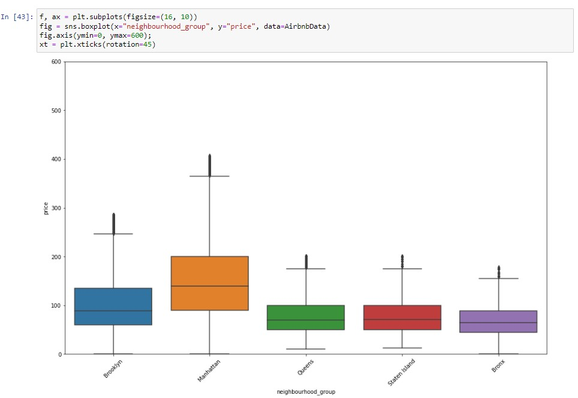
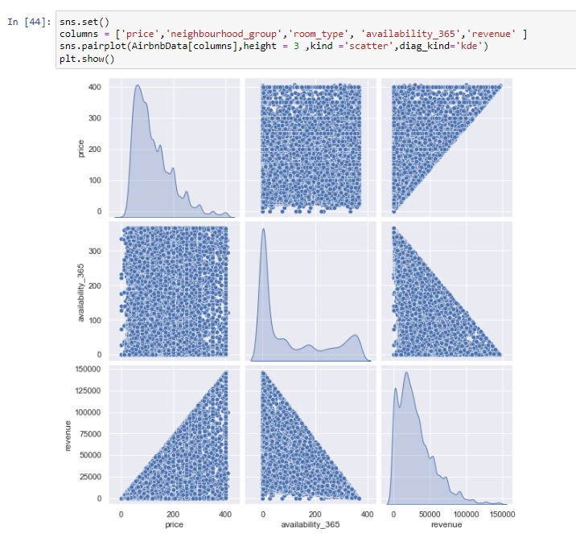
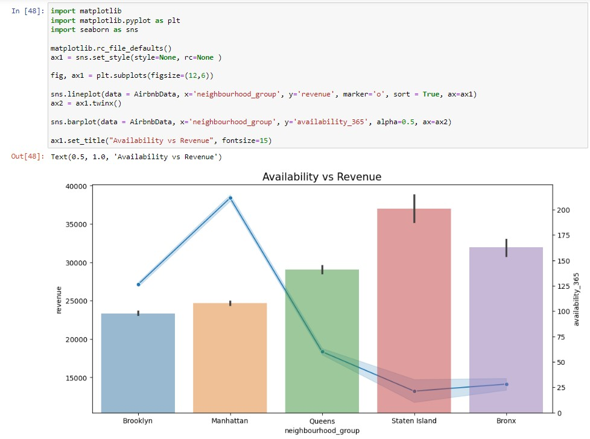
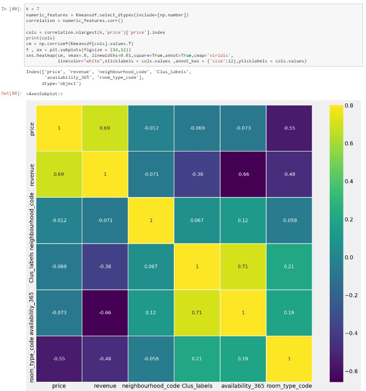
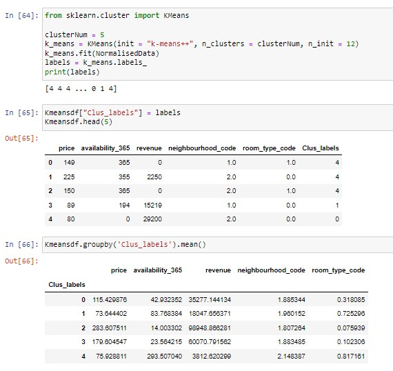
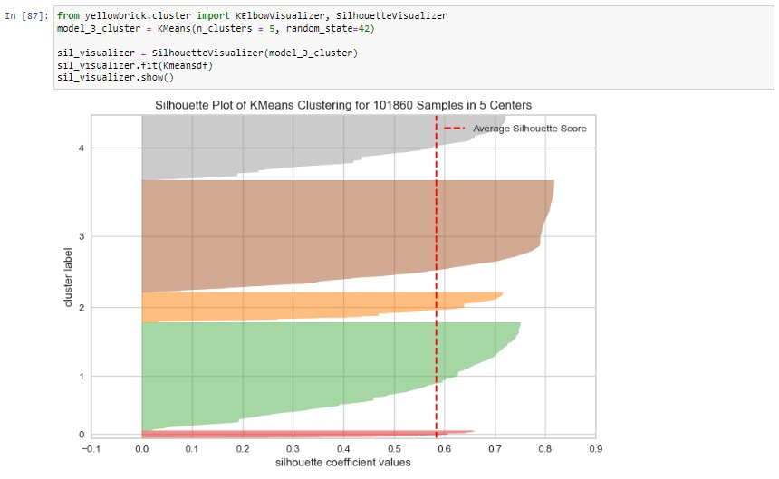
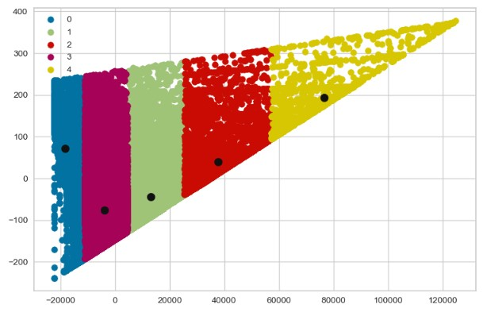

Unit 6 learnings
Assessment 1
Assessment 1 has been done in a team with Mubarak dada and Trevor Ndlazi. The brief was to conduct an exploratory data analysis and an analytic report on Airbnb data in suburbs in the UK which was hosted in
Kaggle. We used Jupyter notebook to prepare all of our analysis. This assessment activity took much effort and practise as I had not used Jupyter notebook before or coded in Python. In doing so,
I have learned much about exploratory data analysis and using various libraries for data visualisation. Some of the graphs I have created below:

Boxplot of neighbourhood vs price (Moodley .et al, 2022)
The above graph is the boxplot created after removal of the outliers. In the beginning of the course, these were not intuitive to me, but after this assignment, I prefer to see graphs in this format
as it is easy to visualise the data, and note the min, max,25th, mean, and 75th percentile easily. It is also easy to see how much of the data are outliers.

Various scatterplots used for data analysis of Airbnb data (Moodley .et al, 2022)
The above scatterplot has been very useful in visualising the spread of data between two variables.

Bargraph and Lineplot used for visualisation of neighbourhood data vs price (Moodley .et al, 2022)
The above graph is what I am most proud of and tells a great story for the entire dataset in a single graph. The bar charts show the revenue by neighbourhood, and the line plot shows the availability.
Revenue was calculated as the price * (365 - availability), and shows in a single graph how availability is related to revenue in all areas under consideration.

Correlation plot of data in Airbnb dataset (Moodley .et al, 2022)
The above graph shows the correlation plot we used to find similarities between variables in the data, with which we could use in our analysis. In this dataset, no large correlations were
found between the pertinent variables in the dataset, but we have seen correlations between neighbourhood and availability (71%) and neighbourhood and room type code (19%).

Code used for cluster algorithm for data in Airbnb dataset (Moodley .et al, 2022)
The above code has been used for the analysis we have done for assessment 1. For the K-Means algorithm, sum of squares is used to calculate the centroids, and thus numerical values are required.
We used the ordinal encoder to encode all of our categorical values before running them through the K-means clustering algorithm. We have selected 5 clusters as the optimum number of clusters for
good spread of the clusters with the highest silhouette coefficient values:

Silhouette curve for K=5 clusters (Moodley .et al, 2022)
This resulted in well defined clusters depicted below. The centroids are also shown in the diagram as the black points within the clusters. 
Silhouette curve for K=5 clusters (Moodley .et al, 2022)
The assessment activity has taught me a wealth of knowlegde in real world programming and data visualisation. The versitality of tools such as seaborn, and matlibplot have been indispensible,
along with the rich graphics they can create, and easily produce graphs which have multiple variables embedded into them. Ordinal encoding was easy to perform using sklearn libraries.
I have utilized Synthetic minority oversampling technique (SMOTE) in this assignment as certain neighbourhood groups were extremely imbalanced. SMOTE can generate random sample data points
using the input data synthetically (Wang .et al, 2021), and thus be used to balanced datasets for classification accuracy on minority classes. We used a version of SMOTE called SMOTENC
(Numerical/categorical) which is designed to handle a categorical variable as target. Finally, I have learned a great deal on cleaning of the data and handling of it until it is ready
for the classifier.
Working in a team environment for the first time has been a great experience. My team mates have been very knowledgable on the subject matter and we have put in many hours to ensure the model
is of a good standard. Further to this, we have also been able to assess the strenghts of each team member and leverage this. Such as myself heading the EDA, and Mubarak heading the clustering, with
Trevor brilliant at analysis and putting the content together ensuring it is seamless.